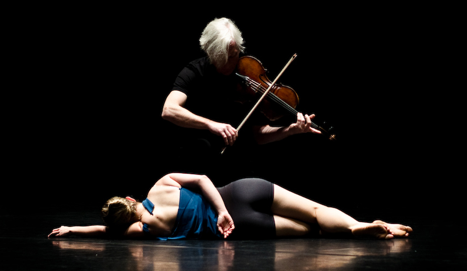

ARTS:
Preston Arts is the umbrella producing and presenting organization for the Preston University College of Fine Arts and Communications.
We present more ....

About Art:
The arts represent a form of expression of the living, generally influenced by culture and driven by a creative impulse. The arts are part of feeling and subjectivity, which is why a finite definition is not possible. The major elements of the arts are literature, performing arts including music, dance and theater, culinary arts such as, for example, cooking, chocolate making and wine making, media arts such as photography and film as well as the visual arts which include drawing, painting and sculpture. Some art forms combine a visual element in the performance (eg a movie) and the written word (eg, comics).
From prehistoric cave paintings to our modern films, art allows us to tell stories but also to transmit humanity's relationship with its environment.
History:
In the Middle Ages, the Artes Liberales (Liberal Arts) were taught in universities as part of the Trivium, a program bringing together grammar, rhetoric and dialectics12, but also QuadriviumN 4.13 which brings together the mathematical arts of arithmetic. , geometry, music and astronomy14. The Artes Mechanicae (Mechanical Arts) including the manufacture of wool, weaponry, navigation, agriculture, hunting, medicine and theater15 are practiced and developed in the guilds. The modern distinction between artistic and non-artistic skills emerges in the Renaissance.
In modern academies, the arts are generally grouped with the humanities. Some of these humanities are history, linguistics, literature, and philosophy.